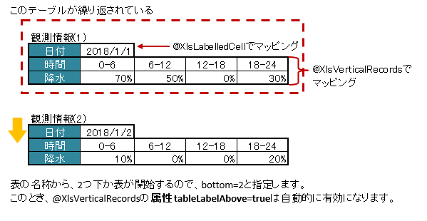

-
@Retention(value=RUNTIME) @Target(value={METHOD,FIELD}) @Documented @XlsFieldProcessor(value={}) public @interface XlsIterateTables
同一の構造の表がシート内で繰り返し出現する場合に使用し、Collection(List、Set)または配列にマッピングします。 次のアノテーションを組み合わせて使用します。- 横方向の表をマッピングするアノテーション
XlsHorizontalRecords。 - 縦方向の表をマッピングするアノテーション
XlsVerticalRecords。
ただし、アノテーションXlsHorizontalRecordsと同時に使用することはできません。 - 見出し付きの1つのセルをマッピングするアノテーション
XlsLabelledCell。 - 見出し付きの連続し隣接する複数のセルをマッピングするアノテーション
XlsLabelledArrayCells。
基本的な使い方
使い方を基本的な例を元に説明していきます。

基本的な例
シート用クラスの場合、属性
tableLabel()で、繰り返し部分の表の名称を指定します。
また、属性bottom()で、アノテーションXlsHorizontalRecordsを マッピングする表の開始位置が表の名称からどれだけ離れているかを指定します。// シート用クラス @XlsSheet(name="シート名") public class SampleSheet { @XlsIterateTables(tableLabel="部門情報", bottom=2) private List<SampleTable> tables; }繰り返し部分に対応するクラスは、以下のように、 アノテーション
XlsLabelledCell、XlsHorizontalRecordsを使用することができます。アノテーション
XlsHorizontalRecordsを使用する場合、属性XlsHorizontalRecords.tableLabel()は設定する必要はありません。
アノテーションXlsIterateTablesの属性tableLabel()とbottom()の値を引き継ぐため、指定しなくても問題ないためです。// テーブル用クラス public class SampleTable { @XlsLabelledCell(label="部門名", type=LabelledCellType.Right) private String deptName; @XlsHorizontalRecords(terminal=RecordTerminal.Border) private List<SampleRecord> records; }繰り返し部分に対応するJavaBeanでアノテーション
XlsHorizontalRecordsを使用した場合、 通常の場合と同じくアノテーションXlsColumnやXlsMapColumnsで列とのマッピングを行います。// レコード用クラス public class SampleRecord { @XlsColumn(columnName="ID") private String id; @XlsColumn(columnName="名前") private String name; }縦方向の表を組み合わせてマッピングする場合
縦方向の表をマッピングするアノテーションXlsVerticalRecordsも使用することができます。- ただし、横方向の表をマッピングするアノテーション
XlsHorizontalRecordsと同時に使用することはできません。 - 属性
XlsVerticalRecords.tableLabelAbove()の値がtrueとが自動的に有効になり、表の見出しが上部にあることを前提に処理されます。
縦方向の表のマッピング
// シート用クラス @XlsSheet(name="観測データ") public class SampleSheet { @XlsIterateTables(tableLabel="/観測情報.+/", bottom=2) private List<DataTable> tables; } // テーブル用クラス public class DataTable { @XlsLabelledCell(label="日付", type=LabelledCellType.Right) private LocalDate date; XlsVerticalRecords(terminal=RecordTerminal.Border) private List<WeatherRecord> records; } // レコード用クラス public class WeatherRecord { @XlsColumn(columnName="時間") private String time; @XlsColumn(columnName="降水") private double precipitation; }表の名称を正規表現、正規化して指定する場合
シートの構造は同じだが、ラベルのセルが微妙に異なる場合、ラベルセルを正規表現による指定が可能です。
また、空白や改行を除去してラベルセルを比較するように設定することも可能です。正規表現で指定する場合、アノテーションの属性の値を
/正規表現/のように、スラッシュで囲みます。- スラッシュで囲まない場合、通常の文字列として処理されます。
- 正規表現の指定機能を有効にするには、システム設定のプロパティ
Configuration.setRegexLabelText(boolean)の値を trueに設定します。
ラベセルの値に改行が空白が入っている場合、それらを除去し正規化してアノテーションの属性値と比較することが可能です。
- 正規化とは、空白、改行、タブを除去することを指します。
- ラベルを正規化する機能を有効にするには、、システム設定のプロパティ
Configuration.setNormalizeLabelText(boolean)の値を trueに設定します。
これらの指定が可能な属性は、
tableLabel()です。// システム設定 XlsMapper xlsMapper = new XlsMapper(); xlsMapper.getConfiguration() .setRegexLabelText(true) // ラベルを正規表現で指定可能にする機能を有効にする。 .setNormalizeLabelText(true); // ラベルを正規化して比較する機能を有効にする。 // シート用クラス @XlsSheet(name="Users") public class SampleSheet { // 正規表現による指定 @XlsIterateTables(tableLabel="/部門情報.+/", bottom=2) private List<SampleTable> tables; }- バージョン:
- 2.0
- 作成者:
- Mitsuyoshi Hasegawa, T.TSUCHIE
- 横方向の表をマッピングするアノテーション
-
-
必須要素のサマリー
必須要素 修飾子とタイプ 必須要素と説明 StringtableLabel繰り返し部分の見出しラベルを指定します。
-
任意要素のサマリー
任意要素 修飾子とタイプ 任意要素と説明 intbottomProcessCase[]cases適用するケースを指定します。booleanoptional表が見つからなかった場合、無視するか指定します。Class<?>tableClass繰り返し部分の情報を格納するJavaBeanのクラス。
-
-
-
要素の詳細
-
tableLabel
public abstract String tableLabel
繰り返し部分の見出しラベルを指定します。システム設定により、正規表現による指定や正規化（改行、空白、タブの削除）による比較の対象となります。
- 戻り値:
-
-
-
tableClass
public abstract Class<?> tableClass
繰り返し部分の情報を格納するJavaBeanのクラス。指定しない場合は、Genericsの定義タイプを使用します。
- 戻り値:
- デフォルト:
- java.lang.Object.class
-
-
-
cases
public abstract ProcessCase[] cases
適用するケースを指定します。- 戻り値:
- 何も指定しない場合は全てのケースに適用されます。
- 導入されたバージョン:
- 2.0
- デフォルト:
- {}
-
-